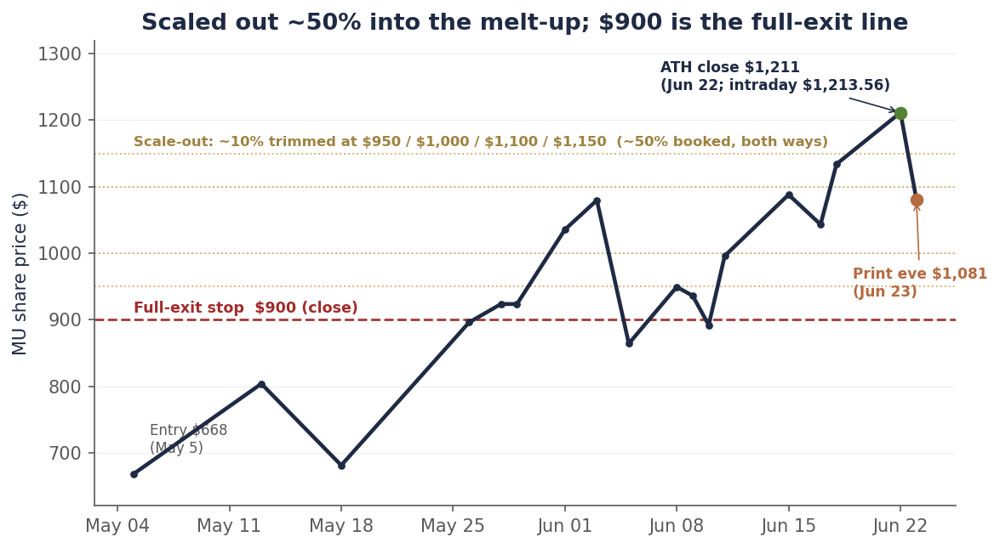
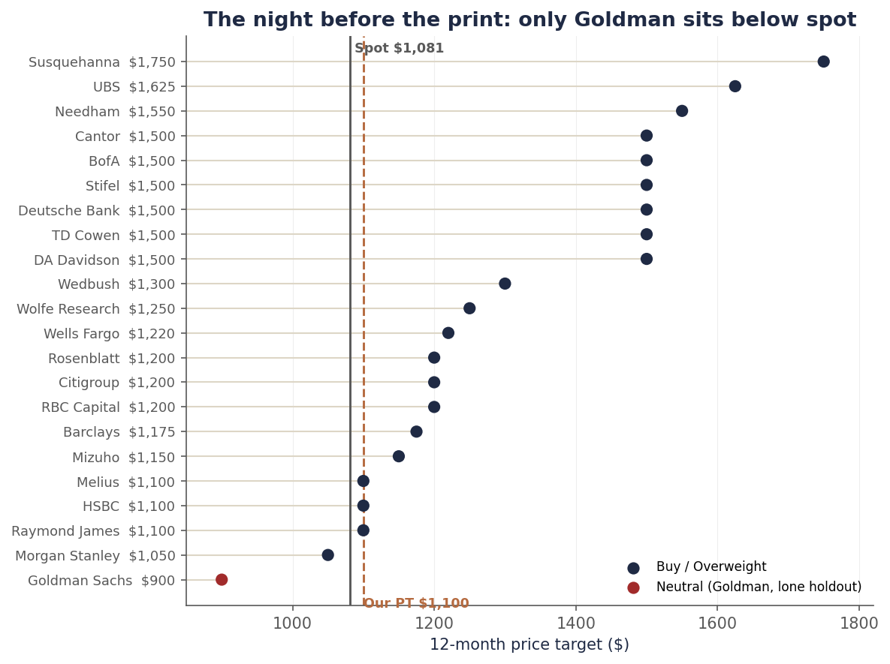

Single-name update · Memory · FQ3 print eve
Everyone agrees on Micron now. Tomorrow it has to print.
Micron reports fiscal third-quarter results tomorrow after the close, and it does so from a very different position than the one we laid out in full seven weeks ago. Then, the stock was $668 and the Street was skeptical: the median target sat near $549 — below the stock price itself — and Goldman anchored the low end at $400. Our $1,100 target was the contrarian bull call. The analysis was straightforward: take management’s guidance seriously, anchor on through-cycle rather than peak earnings, and define in advance the events that would break the thesis.
That setup has inverted. On Monday, June 22, Micron closed at an all-time high of $1,211.38. The Street’s modal target is now $1,500 — six firms there, three above it, with only Goldman ($900) and Morgan Stanley ($1,050) left below the stock. FQ3 prints tomorrow, Wednesday, June 24, after the close. The bar has moved up with the price, and the macro bid that carried high-beta semis all spring is gone — Micron walked through a hot CPI print and a hawkish Fed to get here.
The in-quarter beat is almost ceremonial: consensus already sits above the company’s own guide. What actually decides the tape is the FQ4 revenue guide against a $38–42B bar, the HBM4 ASP and share commentary, and any tonal read on FY27. PT stays at $1,100 — a 12-month through-cycle fair value, not a ceiling on a cycle peak. We go in having already booked roughly half the position into the melt-up, with the book now carrying 40% cash; we hold the residual for the upside we still see, behind one hard line — a close at $900 takes us fully out.
Chart 1 — The round trip, and the scale-out
$668 to a $1,211 record in seven weeks. We scaled out ~50% on the way up; $900 is where we’re fully out.

Daily closes, May 5–June 23, 2026. We trimmed roughly 10% of the position at each of $950, $1,000, $1,100 and $1,150 on the way up, and again at $1,100 on the way down — five steps, about half the position booked — without trying to call the top. A close at $900 is the full-exit stop. Source: closing prices via the bpleon price feed (Yahoo).
Scaled out, not sold out
Start with the book, because that is the part that is mechanical and the part that matters most going into a binary event. The fixed-rung ladder we published at $668 did its job through the May melt-up, and as the tape turned violent in June — $864.01 on June 5 to a $1,211.38 record on June 22 — that approach refined into a disciplined scale-out. We trimmed roughly 10% of the position at each of $950, $1,000, $1,100 and $1,150 on the way up, and again at $1,100 on the way back down, which leaves about half the position booked and the rest still working.
Two considerations drove the pace. The first was concentration: a winner that compounds many times over does not stay a starter position, and by mid-June Micron had grown into one of the largest weights in the book. Trimming a holding that size ahead of a binary print is risk management, not a market call. The second was optionality — booking gains into cash funds the next opportunity, and dry powder at a cycle peak is itself a position, not a default.
Where the whole portfolio sits tonight: roughly 25% Micron, 35% across a broadened AI-infrastructure basket (NVIDIA and AMD on the accelerator side, Marvell in custom silicon and interconnect, Coherent in optical), and 40% cash. Even after the scale-out, Micron is still the single largest position in the book. We are holding that residual rather than exiting because we do not believe the cycle is over: the supply data is still tightening and FY27 estimates are still climbing. The stock has simply caught up to our $1,100 fair value, and with FQ3 and FQ4 the peak prints, the residual now rides the estimate-revision cycle rather than any single headline number.
The discipline now runs on one hard line instead of an upside ladder: a close at $900 takes us fully out of the residual. It is worth noting what that level means now versus in May. Two months ago, $900 was a profit-take on a stock breaking out; tonight, after a $1,211 high, a return to $900 would represent a roughly 26% drawdown and a broken trend — the tape signaling that the post-print thesis had failed. Same number, opposite meaning. It is a closing-basis stop, and on a name pricing a one-day move near 15% a severe miss can gap straight through it, so we treat it as a discipline rather than a guarantee of the exit price.
The macro got hawkish. Micron didn’t care.
Two events since our last note should have hit a high-beta memory name, and neither did. May CPI, released June 10, printed 4.2% headline — the hottest reading since April 2023 — but the core was tame at 2.9% and the overshoot was driven almost entirely by energy. The market read it as an oil story and looked through it. Then on June 17, Kevin Warsh chaired his first FOMC and delivered a hawkish hold: rates unchanged at 3.50–3.75%, but the dots flipped to a 2026 hike, with nine participants projecting at least one increase by year-end and futures now pricing a hike rather than a cut as the likely next move. We covered that meeting in the June 19 recap; the short version is that the hawks won the dot plot and the tape shrugged it off by Thursday.
Micron didn’t shrug — it ripped, straight to a record. That tells you something worth naming: MU is no longer trading on the discount rate. It’s trading as a pure memory-supercycle and earnings story, decoupled from the macro that drove it in April and May.
That cuts both ways, and the second way is the one to respect. The macro bid is gone, which means there’s no rising tide to lift the stock if the print is merely fine. But the macro excuse is gone too. If MU misses on guide tomorrow, there’s no hot-CPI, no hawkish-Fed, no rotation day to hide behind. The number carries itself.
Chart 2 — Where the Street sits the night before
Eleven raises in two weeks. $1,500 is the modal bull mark. Only Goldman sits below the stock.

Freshest verified mark per firm, as of June 23. A $1,500 cluster (TD Cowen, Deutsche Bank, Stifel, BofA, DA Davidson, Cantor) has become the modal bull case; Needham $1,550, UBS $1,625, Susquehanna $1,750 sit above. Only Goldman ($900 NEUTRAL) and Morgan Stanley ($1,050) remain below spot. Source: bank notes via Benzinga actions table, Bloomberg, MarketScreener, firm disclosures.
Everyone’s a bull now
The sell-side capitulation that started in May never stopped. In the last two weeks alone: Wolfe to $1,250, RBC to $1,200, TD Cowen from $660 all the way to $1,500, Citi to $1,200, Deutsche Bank to $1,500, Rosenblatt to $1,200, Stifel to $1,500, Wedbush to $1,300, Needham to $1,550, and BofA to $1,500 this morning — ten hikes from the bulls. The eleventh came from Goldman itself: the lone NEUTRAL holdout more than doubled its target, from $400 to $900, a mark that now sits below the stock.
This is the part that warrants caution rather than celebration. When we published the $1,100 target it was a variant view; six weeks later it is one of the lowest targets on the Street, and the modal mark is $1,500. That kind of cross-confirmation feels reassuring, and feeling reassured about a crowded position the night before earnings is exactly when we have made our worst decisions in this sector. Memory has buried more confident analysts than any other corner of semiconductors: the 2018 cycle had everyone certain of a structural re-rating, and by 2023 the same names were printing negative gross margins.
So we are not raising the target to chase the cluster. The $1,100 comes from consensus FY27 EPS multiplied by the multiple Micron has actually traded at in recovery years; if we moved it to $1,500 simply because eleven banks did, we would be backfitting the answer to the share price. We have already booked roughly half the position into this rally, so the residual rides the upside if the bulls prove right and sits behind a hard $900 stop if they do not. The discipline does not need a higher headline number.
The bar moved with the stock
Here is what management guided for FQ3 on the March 18 call, and where the Street actually sits now:
| Line | Company guide | Street consensus | The read |
|---|---|---|---|
| Revenue | $33.5B ± $0.75B | ~$34.4–35B | Street already above guide; a beat is assumed. |
| Gross margin | ~81% | ~81–82% | 82–83% supports the structural read; sub-80% is the first crack. |
| Non-GAAP EPS | $19.15 ± $0.40 | ~$19.7–20.0 | Whisper is a beat; the headline number is not the catalyst. |
| FQ4 revenue guide | — | $38–42B | The actual swing factor. A guide below ~$38B resets FY26 and FY27. |
That gap between the company guide and the Street is not the analysts getting ahead of themselves; it reflects a pattern in how management sets expectations. Micron has beaten the high end of its own guidance in three of the last four quarters, and last quarter the margin was extraordinary: the company guided FQ2 revenue to roughly $18.7 billion and printed $23.86 billion, a 28% beat, with gross margin guided at 68% and delivered at 75%. Sandbagging on that scale is precisely why consensus now carries a premium to the official numbers, and why simply beating the guide no longer clears the bar for this stock.
The consequence is that the in-quarter figures can no longer move the shares on their own, because a beat is already embedded in the price. What re-rates the tape in either direction is the forward guide. The Street is modeling FQ4 revenue of $38–42 billion, and the full-year FY26 EPS consensus of roughly $58 rests on it: a guide above that range gives the structural-supercycle case real fundamental support, while a guide below about $38 billion would make every $1,500 target on the chart above look aspirational at once.
And the in-price bar is the highest it has ever been for this name. At $1,081 the stock sits just below our $1,100 through-cycle fair value — it has effectively priced the base case in full, and any further upside has to come from the bull case the $1,500 cluster is underwriting. The options market is pricing a one-day move of roughly 13–17%; on tonight’s $1,081, that is a swing of about $140–$185 in either direction. A good-but-not-blowout print, into a stock that just made a record with no macro tailwind underneath it, can still fade. That is not a bearish call — it is arithmetic about what is already in the price.
The Broadcom warning, three weeks old
We do not have to reason about this risk in the abstract, because the market ran the experiment three weeks ago. Broadcom reported after the close on June 3, and the quarter itself was excellent — record AI-semiconductor revenue of roughly $10.8 billion, up more than 140% year over year, with near-term AI guidance raised aggressively. The problem sat one line further down: the total-revenue guide for the coming quarter landed just below the most ambitious Street models. That was enough. On June 4 the stock sold off and dragged the entire complex with it; the Philadelphia Semiconductor Index posted its worst session since April 2025, and Micron — which had no operational connection to Broadcom’s quarter — fell roughly 20% from its June 3 high over the next two sessions before the recovery that has since carried it to a record. A hotter-than-expected jobs report on June 5 deepened the move, but the catalyst was Broadcom.
The episode is the cleanest available template for how Micron can trade on Wednesday night. It demonstrates that in a tape valued this richly, a record quarter offers no protection on its own. When expectations are stretched, the market stops paying for the quarter that just closed and starts trading the single forward number that looks weakest against the highest estimates. For Broadcom that number was the total-revenue guide; for Micron it will be the FQ4 revenue guide and the HBM4 pricing commentary. If either lands merely in line rather than ahead, the most probable outcome is a version of what Broadcom shareholders just experienced — a good print that sells off because the good news was already owned.
What Wall Street is looking for
Strip the narrative away and the bull case reduces to a scorecard. Here is what the Street needs to see tomorrow night to keep the $1,500 cluster intact — in rough order of how much each line matters to the stock.
| What the Street wants | The bar | Why it matters |
|---|---|---|
| A clean FQ3 beat | Revenue above ~$35B, EPS above ~$20 | Table stakes. Consensus already assumes it; an in-line print reads as a miss. |
| FQ4 revenue guide | $40B+ (Street models $38–42B) | The single most important number — the first hard read on whether demand is still accelerating. |
| HBM4 pricing | ASPs flat-to-up, no discounting | HBM is the margin engine. Any softness is the first sign the cycle is rolling. |
| HBM share | Hold or gain vs SK Hynix / Samsung | The $1,500 targets assume Micron keeps its HBM economics into HBM4. |
| FY27 framing | Commentary consistent with ~$100+ EPS | That is the earnings power the highest targets capitalize; a walk-back resets them. |
| Gross margin | 82–83% (guide ~81%) | 82%+ says HBM mix and tight DRAM are still compounding; sub-80% says peak. |
Notice the trap built into the scorecard: every line is already the consensus expectation. Hitting them holds the stock where it is; it does not re-rate it higher. To justify $1,500 from $1,081, Micron has to beat the scorecard, not merely meet it — and do so while the options market braces for a 15% move.
What Wall Street might be thinking
Why did eleven banks raise their targets in two weeks — through a hawkish Fed, just weeks after a 20% drawdown? Because the Street has made a structural decision about what kind of company Micron is. The old model said memory is a boom-bust commodity that earns a single-digit multiple even at peak. The new model — the one UBS used to justify $1,625 — says AI has “permanently reshaped memory market fundamentals”: multi-year contracts smooth the pricing, a three-supplier oligopoly holds the discipline, and hyperscaler demand is a secular growth line, not a cyclical one. Treat memory as a structural grower rather than a cyclical commodity, and $1,500 stops looking aggressive — it becomes arithmetic.
The supporting logic is real. Micron signed its first five-year customer agreements this cycle. HBM is sole- or dual-sourced per platform and built to order. Goldman’s own strategy desk credits Micron and NVIDIA with roughly a third of 2026 S&P 500 EPS growth. And the firms that raised through the June selloff read the drawdown as positioning, not fundamentals — the cleanest signal they believe the cycle has further to run.
If that model is right, the residual we are holding is underpriced and the $1,500 targets are conservative. We give it real weight — it is why we are holding rather than exiting. But it is also the argument the Street made at every prior memory peak, which is why we are not betting the whole position on it.
Three things the Street might be missing
This is where our read diverges from the consensus — three points we believe the Street is underweighting, each grounded in data already on the table rather than a hunch.
- The beat is already in the estimates, not just the guide. “Micron beats its guide” is true and almost irrelevant, because the bar that matters is the Street’s number, and consensus already sits above the company’s guide. The stock pre-ran to a record alongside two weeks of climbing targets, so a print that beats the guide but merely meets the Street is a sell-the-news setup — and on our read it is the single most likely outcome.
- HBM4 share is not HBM3E share. The $1,500 targets extrapolate Micron’s current HBM economics forward, but third-party HBM4 allocation estimates for NVIDIA’s Vera Rubin platform put SK Hynix at 50–55%, Samsung at 35–40%, and Micron at just 5–10% — the smallest share of the three suppliers, and potentially below its HBM3E share. If that allocation holds, the FY27 HBM revenue the bull case capitalizes is too high, and tomorrow’s HBM4 commentary is the first place it would show. (Allocation figures are analyst estimates, not company disclosure.)
- A strong guide proves supply is sold out, not that demand is durable. Micron’s capacity is committed through fiscal 2026 on multi-year contracts, so a large FQ4 guide reflects contracted volume rather than fresh demand. The question that actually decides the cycle — whether hyperscaler capital expenditure keeps accelerating into FY27 and FY28, the very issue the Broadcom selloff raised — will not be answered by Micron tomorrow. It will be answered at the Microsoft, Google and Meta prints in late July.
The scenario tree
So what do we actually expect? Our central case is a solid beat that the stock nonetheless struggles to celebrate. The four-scenario tree below frames the range, with probabilities offered as illustrative priors rather than implied odds. The framework is unchanged from our June outlook, because a higher share price is not new information about the quarter.
| Scenario | Revenue | GM | EPS | Likely reaction |
|---|---|---|---|---|
| Guide in line (~20%) | $33.5B | 81% | ~$19.15 | Management nailed it; stock fades 3–5% on no upside. |
| Modest beat — base (~50%) | $34–35B | 82–83% | $20–22 | Most likely. Beats, but not enough to re-rate against the in-price bar. FQ4 guide decides direction. |
| Big beat — FQ2 repeats (~25%) | $36–38B | 83–85% | $23–26 | Validates cycle extension; FQ4 guide well above $42B; stock presses the highs and the residual runs. |
| Negative surprise (~5%) | <$32.5B | <79% | <$18 | HBM ASP softness or a cost miss. Cycle-end signal; we exit the residual regardless of price. |
What we hold with more conviction than any single box is this: the commentary will outweigh the print. The reaction is largely a function of how stretched FY27 consensus already is, and after eleven raises in two weeks it is stretched. We will publish the morning-after read on June 25, mapping the actual numbers onto this tree.
The book, and what fires next
| Layer | Action | Status |
|---|---|---|
| $950 – $1,150 | Five 10% trims, on the way up and back down | ~50% of the position booked. Done. |
| Residual (~50%) | Hold for cycle-peak upside | Rides the FQ3/FQ4 prints and FY27 revisions. Total portfolio: 25% MU / 35% basket / 40% cash. |
| $900 (close) | Full exit of the residual | Hard stop. ~17% below tonight’s $1,081. Not triggered. |
| Call kill-shots | Exit the residual regardless of price | HBM ASP softness; FY27 walk-back. Acted on the call, not the tape. |
The framework changed shape but not spirit. The fixed upside rungs did their work into the melt-up; with half the position booked and the book de-risked to 40% cash, the residual now runs on a single downside line rather than mechanical upside exits — at a cycle peak with estimates still rising, the asymmetry favors letting the survivor run behind a hard stop. HBM3E/HBM4 ASP softness on the call, or even a tonal FY27 walk-back, takes us out of the residual regardless of price. Neither has fired. The discipline only works if we are as willing to act on bad news tomorrow night as we were to book the win this month.
Bottom line: thesis, and going forward
The thesis. Micron is the cleanest memory-cycle long in the market, and the cycle is not over — supply is sold out through fiscal 2026, contract pricing is still climbing, and FY27 estimates are still being revised higher. But thesis and price are different questions. At $1,081 the stock has already reached our $1,100 through-cycle fair value and the Street’s modal target sits at $1,500. The easy, contrarian money — the gap between a $400 Goldman bear case and a defensible $1,100 — has been made.
Our read into the print. The risk has changed sides. The in-quarter beat is priced, the macro cushion is gone, and the stock is bracing for a move near 15% on a forward guide that will confirm supply rather than demand. The most likely outcome, on our work, is a solid-but-priced print — good for the thesis and unremarkable for the stock — with the genuine cycle-durability test still a month away at the hyperscaler prints in July.
Going forward. We have booked roughly half the position into strength and de-risked to 40% cash, and we continue to hold the residual on three rules: a close below $900 takes us fully out; HBM-pricing softness or an FY27 walk-back on the call takes us out regardless of price; and the 40% cash stands as dry powder for the next setup, whether that proves to be adding Micron back at a lower level or rotating further into the basket. What we want to see from here, beyond a clean print, is HBM4 pricing that holds, an FY27 framed toward roughly $100 of earnings power, and the first hyperscaler capital-expenditure raises in July. Any of those would justify holding the residual well past our $1,100 fair value; their absence is exactly what the $900 stop is built for.
One-page summary
| Item | Status |
|---|---|
| Rating | BUY (with trim discipline) |
| Last reference | $1,080.76 (Jun 23 intraday; range $1,055–$1,144) |
| All-time high | $1,211.38 (Jun 22 close; intraday $1,213.56) |
| 12-month base PT | $1,100 (unchanged) |
| Bull case PT | $1,500 (now the Street’s modal target) |
| Bear case PT | $280 (cycle-end scenario) |
| Position / book | ~50% of MU booked via five 10% trims across $950–$1,150; total portfolio now 25% MU / 35% AI basket (NVDA, AMD, MRVL, COHR) / 40% cash |
| Stop | Full exit of the residual on a close at $900 (~17% below spot) |
| Next event | FQ3 print — Wed, June 24, after close |
| FQ3 guide (the bar) | $33.5B rev / ~81% GM / $19.15 EPS |
| Street consensus FQ3 | ~$34.4–35B rev / ~$19.7–20.0 EPS (above guide) |
| The real swing factor | FQ4 revenue guide vs the $38–42B Street bar |
| Implied 1-day move | ~13–17% (about $140–$185 either way on $1,081) |
| Sell-side | Modal target $1,500; only Goldman ($900) and MS ($1,050) below spot; Street high Susquehanna $1,750 |
| Kill-shots into the call | HBM4 ASP softness; FY27 walk-back; FQ4 guide below $38B |
Disclosure: I/we have a beneficial long position in the shares of MU either through stock ownership, options, or other derivatives. The position has been reduced by roughly half through a disciplined scale-out into the June rally, as described above. I wrote this article myself, and it expresses my own opinions. I am not receiving compensation for it. I have no business relationship with any company whose stock is mentioned in this article. This is research and analysis only, not personalized financial advice. This commentary is for informational and educational purposes only and does not constitute investment, tax, or legal advice or a solicitation to buy or sell any security. Past performance is not indicative of future results. Readers should conduct their own research and consult a qualified financial professional before making investment decisions. Sources include Micron IR disclosures and 8-K filings, sell-side notes via the Benzinga actions table, Bloomberg, MarketScreener and firm disclosures, TrendForce/TechPowerUp HBM pricing and share data, BLS CPI and Federal Reserve FOMC releases, and the bpleon price feed. See disclaimer.